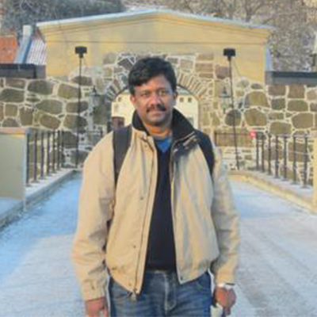
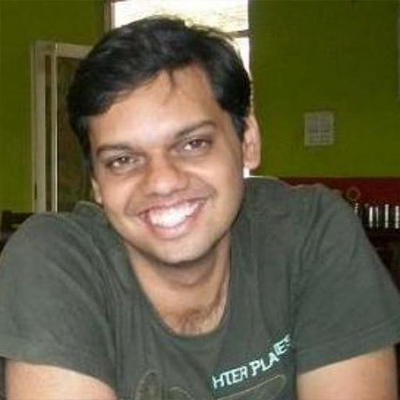
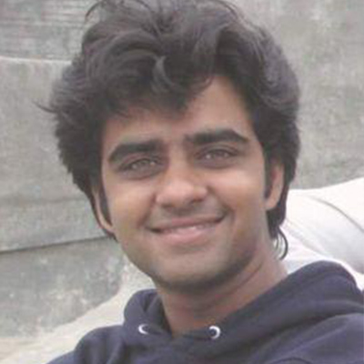
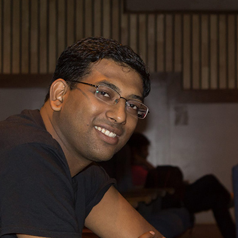
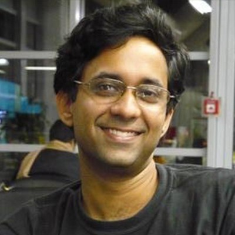

PyCon India is run behind the scenes by loads of volunteers who invest a lot of time and effort into making this event a success. We dedicate this page to those core people who connect the dots together.

Anand B Pillai
Software Engineer, Python Hacker, Original Python Community Member/Founder
Arun Ravindran
Author of "Django Design Patterns and Best Practices" and a developer member of the Django Software Foundation

Chetan Giridhar
Python Developer, Open Source Enthusiast, Previous speaker at PyCon India, APAC & SciPy

Dhruv Baldawa
4+ years of Python experience working with backend and infrastructure. Previously worked at Enthought, Inc. Currently, transforming homes to smart homes

Jaidev Deshpande
Data Scientist at DataCulture Analytics, Regular contributor to the Scientific Python stack

Piyush Kumar
Co-Founder of Advisor Healthcare, Open source enthusiast with over 9 years of professional experience in Website Operations and building data products

Prabhu Ramachandran
Co-founded the Chennai LUG in 1998, Author and lead developer of the award winning Mayavi and TVTK Python packages, Member of Board at Python Software Foundation since 2010

Praveen Patil
Python Programmer, Physics Enthusiast. Contributed to a FOSSASIA-sponsored project during the 2014 Google Summer of Code. Took part in GCI and helped pre-university students dive into the world of free and open source software.
Puneeth Chaganti
Programming in & teaching Python for the past 6 years, helping
build tools for Engineers and Scientists. Interested in machine learning and it's application to photos and videos
Saurabh Kumar
Travel Photographer and Web hacker. Currently working with backend technologies that power startups at fueled.com
Vijay Kumar
Open Source and Free software enthusiast. Currently
working for Zilogic Systems as an embedded software developer and trainer. Also a co-organizer of ChennaiPy
The following list contains the volunteers handling various responsibilities for PyCon India 2015.
 by Webchirpy
by Webchirpy